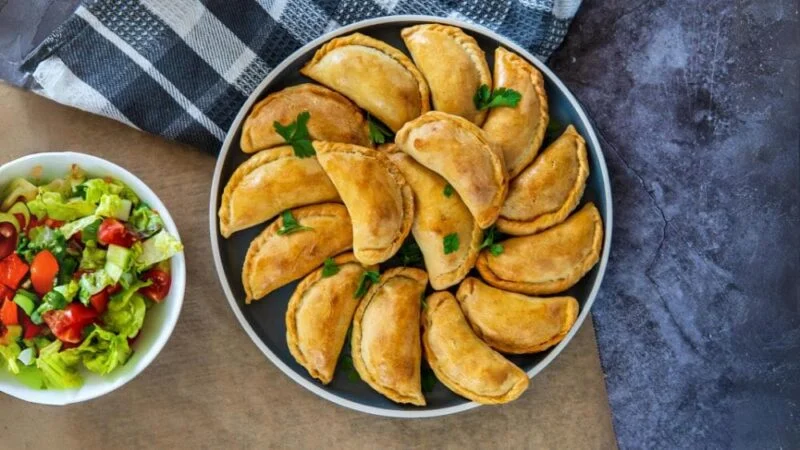
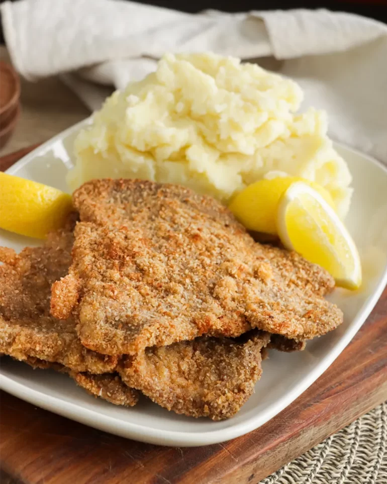

EMPANADAS

Pasos
- En una sartén con aceite caliente, saltear las cebollas y el pimiento. Agregar la carne molida, condimentar y cocinar. Añadir mezclando los huevos duros picados y las aceitunas. Retirar del fuego
- Rellenar cada círculo de masa con la mezcla, doblar formando una media luna y sellar los bordes con un tenedor o repulgue
- Pincelar las empanadas con huevo batido para darles un brillo dorado. Hornear en horno precalentado a 180°C durante 25-30 minutos. Retirar
- Para freír las empanadas calentar una cantidad suficiente de aceite en una sartén a fuego medio. Freírlas unos 2-3 minutos y al retirar colocar sobre papel absorbente
MILANESAS CON PURE

Pasos
- Para el puré: lavar y pelar las papas. En una olla echar a cocer las papas en agua hirviendo con sal (20 a 30 mins). Cuando estas ya estén cocidas (blandas), estilar y moler hasta formar un puré. Agregar la mantequilla y revolver hasta homogeneizar. Incorporar la leche para conseguir la consistencia deseada.
- Salpimentar la carne.
- Sumergir la carne salpimentada en los huevos batidos, dejar que la carne absorba la mezcla, luego pasar por abundante pan rallado, deje descansar para que el empanado se adhiera bién a la carne.
- Calentar un sarten de teflón, con aceite justo para que no se cubra la milanesa. Dorar de un lado y luego del otro sin quemar. Colocarlas en papel absorbente y luego servir con puré de papas.